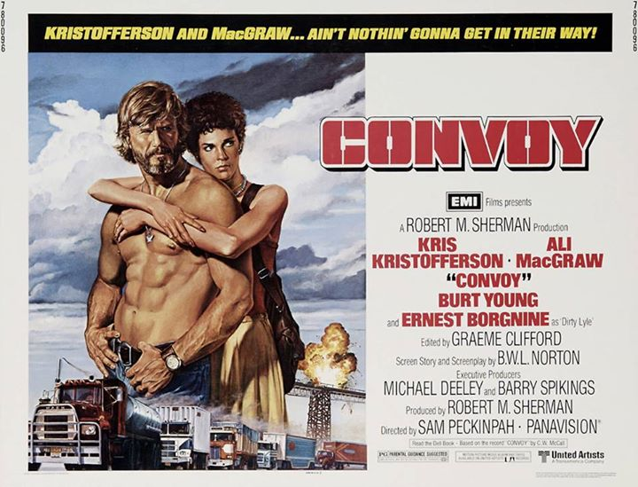
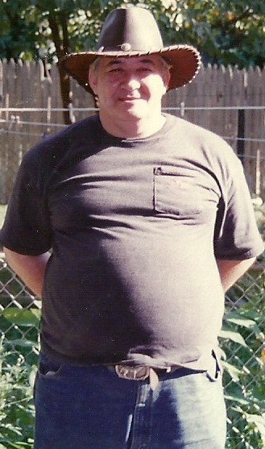
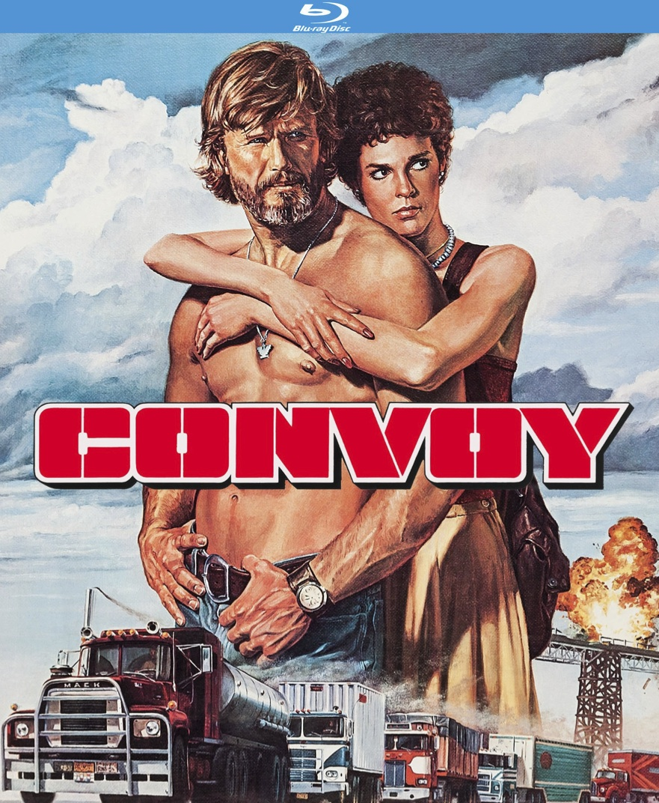

Inspired by My Father Robert Frederick CB Handle: "Big Spender"
Thanks To Ed Floden, Bill Fries (aka C.W. McCall)
Webmaster: David Frederick
Email: Convoy34@aol.com
www.ConvoyTM.com



www.C.W.-McCall.com
www.CONVOYTM.com
About Me & Favorite Links
R.I.P (My Father) Robert W. Frederick (CB Handle: Big Spender or "The one BS'er") On which my love and obsession for the Convoy song/film (based on his affinite hobby of CB radios) would have never existed. Robert W. Frederick, 68, of Lancaster, PA entered into rest unexpectedly on Tuesday, May 3, 2016 at home of natural causes. He was the husband of Harriet L. (Devine) Frederick with whom he was married forty-seven years last June 9. Robert had worked from 1993-2003 at Ramada Inn, Lancaster until retiring. He previously had resided and worked in Norristown / Philadelphia Campus Apartments. Born March 15, 1948 in Plattsburgh, NY, he was the son of the late Donald and Ann (Laramie) Frederick and was of the Catholic faith. Robert was a POW Vietnam Veteran of the U.S. Army. Also surviving are two sons; Donald, of Lancaster and David Frederick married to Joann, of Exeter; one grandson; Adam Frederick; one sister; Sherri married to George Knight; one uncle; Gerald Frederick married to Betty, all of NY and a best friend; Danny Deritis. He was preceded in death by one sister; Helen Bouyo. Relatives and friends are respectfully invited to attend the Christian Prayer Service to be held at the Andrew T. Scheid Funeral Home "Sullivan Home", 121 South Prince Street, Lancaster, PA 17603 (on-site parking with attendants) on Monday morning, May 16, 2016 at 10AM. Friends may call at the Andrew T. Scheid Funeral Home-Lancaster on Monday morning between 9-10AM. Interment will be in the Indiantown Gap National Cemetery, Annville, PA with Military Honors. To submit an on-line condolence, visit: www.scheidfuneralhome.com Andrew T. Scheid Funeral Home "Sullivan Home" Exclusive Provider of Veterans Funeral Care 717-397-8298 |  |
FINALLY!!!
'CONVOY'
Comes To Region 1 Blu Ray & DVD
April 28, 2015
From
Kino Lorber Classics Facebook
Kino Lorber Studio Facebook
Amazon.com Pre-Orders | Kino Lorber.com Pre-Order 25% Off
 | The Blu-Ray Region 1 "Special Features" will include: • Audio Commentary by Film Historians, Nick Redman, Paul Seydor and Garner Simmons • Passion & Poetry - Sam's Trucker Movie (73:00) • Three Lost Scenes (5:45) • Injokes, Friends, Cameos (5:55) • Promoting Convoy (5:30) • Trucker Notes From Norway (3:12) • 4 US Radio Spots (2:30) • More Production Stills (3:12) • US TV Spot (1:00) * Theatrical Trailer (2:00) |
A Special "Battery Review"
of the NEW CONVOY DVD